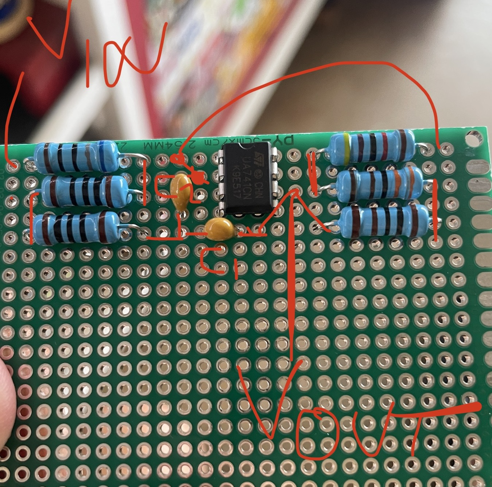

Concept: Create a displaypiece to visualize music playing in real time.
Project Objectives:
Display the relative magnitude of 20 frequency bands spanning the audible spectrum (20Hz - 20kHz).
Apply passive/active filter design concepts towards filtering the music through hardware exclusively.
Use LTSpice to simulate and verify circuit design before building.
Provide sufficient power to the entire apparatus in a safe manner.
I began by dividing the audible spectrum (20Hz - 20kHz) into 20 equal sections on a logarithmic scale.
I decided that using base 2 was appropriate because musical octaves also use a base 2 exponential scale.
I drew up a simple band pass filter to separate the input signal.
(Above) Simple band pass filter used in first draft schematic
For a band pass filter, this is as simple as it gets. The low number of
components drew me to this design, since I would be replicating this circuit 20 times over for the equalizer.
I then picked component values and had my first schematic:
(Above) Equalizer Filters First Draft
To verify that the circuit works as intended, I performed an AC Analysis
to view the outputs of each filter at various frequencies.
AC Analysis for all 20 filter outputs.
Bode Plot for the first five filter outputs.
While this filter design is simple and cheap, I decided that the pass bands had too much overlap,
and that I would need a better filter to make my equalizer as selective as I want it to be.
After doing research on band pass filter design, I came across and settled upon this circuit,
which makes use of Operational Amplifiers (OpAmps).
Band pass filter with OpAmp.
While this filter design has more complexity, the filter is much more selective
than the previous design. I once again picked component values and came up with another schematic:
Equalizer Filters V2.
AC Analysis for all 20 filter outputs.
With steeper, more distinct peaks on the Bode Plot, this filter design
is much more selective; this will yield a better equalizer because each frequency component will only
affect one frequency band at a time.
I then got to work assembling each of these filters on a Perforated Circuit Board (PCB).
In hindsight, these were rather tedious to solder together, and in this application it would have been
more efficient to design a custom PCB and solder the components to it instead!

(Above) The first three assembled filters.
(Left) Scribbled plan on how to connect all of the components.
(Above) 19 of the 20 assembled filters.
(Right) 15 of the filters connected to a power distribution board.
The output of each filter is an Arduino, which will find the amplitude of the output and control
the lights accordingly.